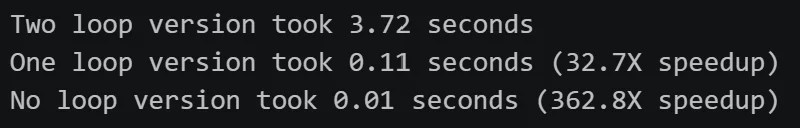
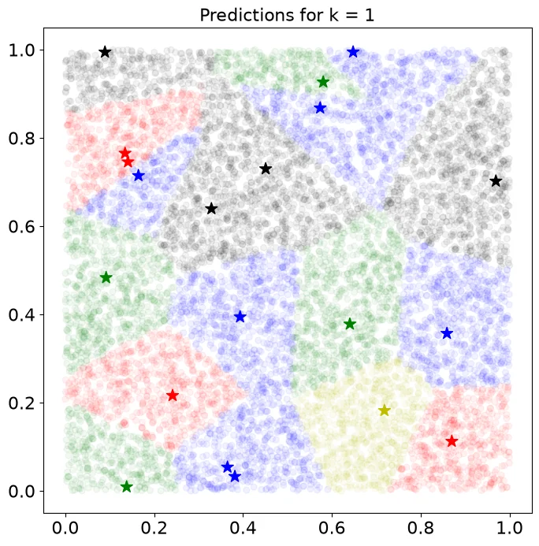
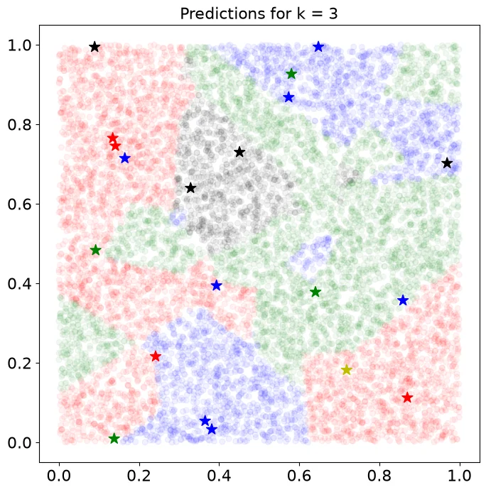
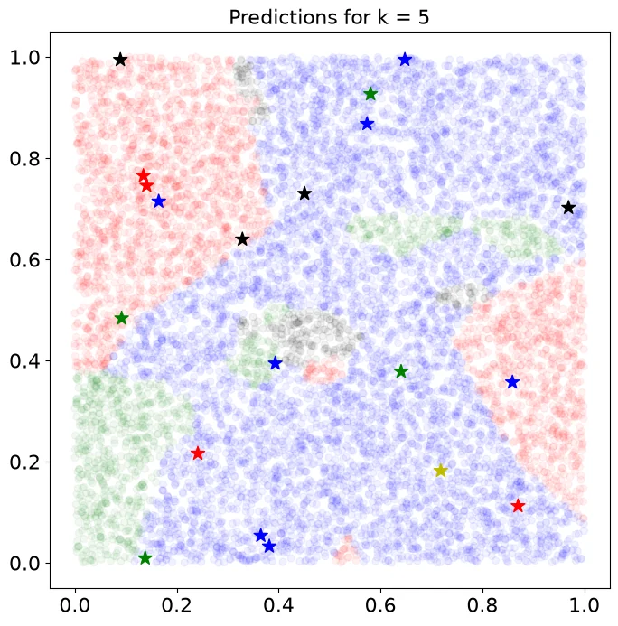
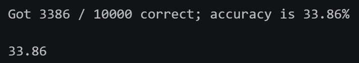

Assignment 1：Pytorch Basics & kNN Classifier
A1 includes 2 questions:
Q1: PyTorch 101. Walk you through the basics of working with tensors in PyTorch.
Q2: k-Nearest Neighbor classifier. Walk you through implementing a kNN classifier.
这里整理了一些常用的 pytorch 语法和我做 assignment 的 debug 经历。
PyTorch 基本语法
本文关于pytorch语法的一些阐述较为简略，要了解更多信息请参考这个工具书。
1. Tensor Basics
1.1 创建、访问与形状
| 用法 | 作用 |
|---|---|
import torch、torch.__version__ |
导入 PyTorch、查看版本 |
torch.tensor(data) |
从列表或嵌套列表创建张量 |
x.dim()、x.ndim |
维度数量（rank） |
x.shape、x.size() |
各维度大小；x.size(d) 获取第 d 维大小 |
x[i]、x[i, j] |
取元素；下标从 0 开始，结果仍是 Tensor |
x[i, j] = value |
原地修改元素 |
x.item() |
将单元素 Tensor 转为 Python 标量 |
x.tolist() |
Tensor 转为 Python 标量或嵌套列表 |
torch.is_tensor(x) |
判断是否为 Tensor |
1.2 张量构造函数
| 用法 | 作用 |
|---|---|
torch.zeros(M, N) |
全 0 |
torch.ones(M, N) |
全 1 |
torch.eye(n) |
单位矩阵 |
torch.rand(M, N) |
[0, 1) 均匀分布随机数 |
torch.randn(M, N) |
标准正态分布随机数 |
torch.full((M, N), fill_value=v) |
指定形状，值全部填为 v |
1.3 数据类型
| 用法 | 作用 |
|---|---|
x.dtype |
查看元素类型 |
torch.tensor(data, dtype=...) |
创建时指定类型 |
x.to(dtype) |
转换类型 |
x.float()、x.double()、x.long() |
转为 float32、float64、int64 |
torch.zeros_like(x) |
与 x 同形状、同类型、同设备的全 0 张量 |
x.new_zeros(M, N) |
指定新形状，继承 x 的类型和设备 |
x.to(other) |
匹配另一个 Tensor 的类型和设备 |
torch.arange(start, end, step, dtype=...) |
等差数列，包含 start，不包含 end |
- 常用数据类型：
float32（计算）、float64（双精度）、int64（整数／索引）、bool（掩码）、float16（半精度）；另有int16、int32、uint8。
2. Tensor Indexing
2.1 切片索引
| 用法 | 作用 |
|---|---|
x[start:stop:step] |
左闭右开，默认步长为 1 |
x[:k]、x[k:]、x[:] |
前 k 项、从 k 起、全部 |
x[-1]、x[:-1] |
最后一项、排除最后一项 |
x[::2] |
每隔一项取一项 |
x[i, :]、x[i] |
第 i 行，整数索引会去掉该维度 |
x[i:i+1, :] |
单行切片，保留该维度 |
x[:, j:j+1] |
单列切片，保留形状 (M, 1) |
x[:2, :3] |
前两行、前三列 |
x[::2, 1::2] |
偶数下标行、奇数下标列 |
x.clone() |
复制数据，修改副本不影响原张量 |
x[:, :2] = v |
原地给切片赋值；右侧可为标量或形状兼容的 Tensor |
- 基本切片返回共享数据的 view，修改切片会影响原张量。需要独立数据时要
clone()。
2.2 整数数组索引
| 用法 | 作用 |
|---|---|
x[rows]、x[:, cols] |
按指定顺序选行／列，可重复；索引可用整数列表或 int64 Tensor |
x[rows, cols] |
等长一维索引逐对取元素：第 k 项为 x[rows[k], cols[k]] |
x[rows, cols] = v |
原地修改指定位置 |
torch.arange(n) |
创建索引 0, 1, ..., n - 1 |
- 整数数组索引读取返回新数据，通常无需再
clone()。 - 索引赋值仍会修改原张量。
2.3 布尔索引
| 用法 | 作用 |
|---|---|
mask = x > 0 |
逐元素比较，得到同形状 bool Tensor |
x[mask] |
同形状掩码筛选出真值位置，结果是一维 Tensor |
x[x <= 3] = 0 |
原地修改满足条件的元素 |
torch.manual_seed(seed) |
设置随机种子，便于复现随机测试 |
3. Reshaping Operations
3.1 View
| 用法 | 作用 |
|---|---|
x.view(M, N) |
在元素总数不变的前提下改变形状，共享原数据 |
x.view(-1) |
展平为一维 |
x.view(1, -1)、x.view(-1, 1) |
转为二维行向量／列向量 |
-1表示自动推断该维大小，一次最多使用一个。- 改变形状不会交换轴，因为
.view()始终按维度顺序读取，因此不能直接实现矩阵转置。
3.2 交换轴
| 用法 | 作用 |
|---|---|
x.t()、torch.t(x) |
二维矩阵转置 |
x.transpose(a, b)、torch.transpose(x, a, b) |
交换指定的两个维度 |
x.permute(1, 2, 0) |
按指定顺序重排全部维度；新轴依次来自旧轴 1、2、0 |
- 这些操作通常共享原数据，只改变形状和访问方式。
3.3 连续性与 Reshape
| 用法 | 作用 |
|---|---|
x.contiguous() |
得到连续布局；已连续时返回自身，否则复制 |
x.reshape(M, N) |
改变形状；能共享数据时返回 view，否则复制 |
x.transpose(a, b).contiguous().view(...) |
交换轴后，先整理连续布局，再改变形状 |
view要求形状与底层步长兼容；转置后的非连续 Tensor 常无法直接view。reshape会在必要时复制，但并非总是深拷贝。
4. Tensor Operations
4.1 逐元素运算
| 运算 | 等价写法 |
|---|---|
| 加法 | x + y、torch.add(x, y)、x.add(y) |
| 减法 | x - y、torch.sub(x, y)、x.sub(y) |
| 乘法 | x * y、torch.mul(x, y)、x.mul(y) |
| 除法 | x / y、torch.div(x, y)、x.div(y) |
| 幂 | x ** y、torch.pow(x, y)、x.pow(y) |
| 平方根 | torch.sqrt(x)、x.sqrt() |
| 三角函数 | torch.sin(x)／x.sin()、torch.cos(x)／x.cos() |
| 绝对值 | torch.abs(x)、x.abs() |
*是逐元素乘法；矩阵乘法要使用@或相应函数。
4.2 归约运算
| 用法 | 作用 |
|---|---|
x.sum()、torch.sum(x) |
全部元素求和，返回标量 Tensor |
x.sum(dim=d) |
沿第 d 维求和，默认删除该维度 |
x.mean(dim=d) |
沿指定维度求均值，输入需为浮点或复数 |
x.min()、x.max() |
全局最小／最大值 |
values, indices = x.min(dim=d) |
返回该维最小值及其在该维的下标；max 同理 |
x.argmin(dim=d) |
只返回最小值下标；并列时返回第一个 |
x.sum(dim=d, keepdim=True) |
保留该维度，大小变为 1；其他归约函数也可用 |
x.all() |
所有布尔元素是否都为真 |
- 对
(M, N)：dim=0消去行轴，得到每列结果(N,)；dim=1消去列轴，得到每行结果(M,)。
4.3 向量与矩阵运算
| 用法 | 输入／输出 |
|---|---|
torch.dot(v, w) |
(N,) 与 (N,) → 标量内积 |
torch.mm(x, y) |
(N, M) 与 (M, P) → (N, P)，不广播 |
torch.mv(x, v) |
(N, M) 与 (M,) → (N,) |
torch.addmm(b, x, y, beta=1, alpha=1) |
beta * b + alpha * (x @ y) |
torch.addmv(b, x, v, beta=1, alpha=1) |
beta * b + alpha * (x @ v) |
torch.bmm(x, y) |
(B, N, M) 与 (B, M, P) → (B, N, P)，batch 数须相同，不广播 |
torch.baddbmm(b, x, y, beta=1, alpha=1) |
beta * b + alpha * bmm(x, y) |
torch.matmul(x, y)、x @ y |
通用乘法；按维度处理向量／矩阵，高维输入可广播 batch 维 |
torch.stack(tensors, dim=0) |
同形状张量沿新维度堆叠 |
5. Broadcasting
5.1 广播规则
从末尾对齐两个张量的各维度，如果两张量维数不同，则对维数较小的张量往左边补一个大小为 1 的维度。重复此操作，直到两个张量维数一致，并且各维度的大小须相等或其中一个为 1。大小为 1 的维度可通过 copy 扩展到另一张量对应维度的大小（一种假设，并没有实际复制数据）。
| 用法 | 作用 |
|---|---|
x + v，x: (M, N)、v: (N,) |
给每行加同一个向量 |
x + w.view(-1, 1)，w: (M,) |
给每列加同一个列向量 |
v.view(-1, 1) * w，v: (N,)、w: (M,) |
生成外积 (N, M) |
c.view(-1, 1, 1) * x，c: (B,)、x: (M, N) |
用不同常数缩放同一矩阵，输出 (B, M, N) |
v.repeat((M, 1)) |
实际复制数据，得到多行；区别于广播 |
torch.broadcast_tensors(x, v) |
返回可共同广播的视图；可能有多个位置共享同一元素，避免原地写入 |
5.2 原地操作
| 用法 | 行为 |
|---|---|
z = x.add(y)、z = x + y |
新结果，输入不变 |
x.add_(y)、x += y |
修改 x |
torch.add(x, y, out=x) |
把结果写入 x |
z is x |
判断是否是同一 Python 对象，不是比较数值 |
- 方法名末尾的
_通常表示原地操作；out=可将结果写入指定位置。
👉 原地修改在深度学习中可能会影响后续的梯度计算，因此我们最好使用能产生新结果的函数。
6. Running on GPU
| 用法 | 作用 |
|---|---|
torch.cuda.is_available() |
检查 CUDA 是否可用 |
x.device、torch.device('cpu') |
查看／表示设备 |
x.to('cuda')、x.cuda() |
返回 GPU 上的张量 |
x.to('cpu')、x.cpu() |
返回 CPU 上的张量 |
torch.tensor(data, device='cuda', dtype=...) |
创建时指定设备和类型；其他构造函数也可用 |
x.to(other) |
同时匹配另一个张量的设备与类型 |
torch.cuda.synchronize() |
等待 GPU 操作完成，计时前后需要同步 |
- GPU 运算通常要求参与运算的 Tensor 在同一设备，而新建 Tensor 默认在 CPU，需要指定设备或跨设备搬运数据（开销较大）。
7. Challenge
7.1 各不等长张量的均值
语法
| 用法 | 作用 |
|---|---|
torch.cat(xs, dim=0) |
沿已有维度拼接，得到一维长向量；不同于 stack 新增维度 |
torch.repeat_interleave(ids, ls, dim=0) |
将 ids[i] 连续重复 ls[i] 次 |
base.scatter_add(d, idx, src) |
将 src[j] 的元素逐个加到base，累加位置由idx的值和src的索引共同决定。累加位置在dim=d维度，取idx[src的索引]的值；在dim≠d的维度取src在dim≠d的对应索引 |
实现逻辑
tmp = cat(xs)：把各张量首尾拼接。- 用
arange(N)生成组号，再通过torch.repeat_interleave()按长度ls重复。例如：ls=[3, 2]得到idx=[0, 0, 0, 1, 1]。 - 在长度为
N的全 0 张量中，通过scatter_add将tmp按组号累加，得到每组总和。 - 逐元素除以
ls，得到形状(N,)的均值。
| challenge_mean_tensors | |
|---|---|
7.2 不同数值及首次出现位置
语法
| 用法 | 作用 |
|---|---|
values, indices = x.sort(stable=True) |
排序并返回原始下标；稳定排序保留相等元素的原有顺序 |
values[1:] != values[:-1] |
比较相邻元素，标记数值发生变化的位置 |
torch.cat([first, mask]) |
给相邻比较结果补上首元素的标记 |
values[mask]、indices[mask] |
用同一掩码选择数值及对应原始下标 |
torch.unique(x) |
获取不同数值；本题允许使用，但只给半分 |
实现逻辑
- 稳定排序，使相等数值相邻；同值中原始下标最小者排在最前。
- 比较相邻数值，在掩码头部补
True，保留每段的第一个元素。 - 同步筛选排序值和原始下标，得到升序
uniques及首次出现位置indices。
| challenge_get_uniques | |
|---|---|
kNN 分类器
Input:
X_train: Training samples (N × D)
y_train: Training labels (N)
X_test: Test samples (M × D)
Output:
y_pred: Predicted labels (M)
Training:
Store X_train and y_train
Prediction:
Initialize y_pred
for i = 1 to M do
for j = 1 to N do
dist[j] ← Σ(k=1 to D) |X_train[j,k] - X_test[i,k]|
end for
min_index ← argmin(dist)
y_pred[i] ← y_train[min_index]
end for
return y_pred
距离计算函数
计算每个 test image 与每个 train image 之间的距离，返回一个二维张量。其中距离的计算方法是图片张量之间的 2 范数的平方。
函数接口
two loops implementation
one loop implementation
no loop implementation
一开始，我的想法是直接通过一次广播来实现向量化计算。
| v1 | |
|---|---|
然而，这段代码虽然正确性通过了，但 no loop 的计算时间相比 one loop竟然增长了。在dist的计算过程中，产生了巨大的(num_train, num_test, D)大小的三位张量，超出了题目的内存限制，内存压力过大导致性能下降。
后来，我回归题目所给的提示，将距离公式展开：
通过两次sum()和一次matrix multiplication组合成最终结果。
| v2 | |
|---|---|
对比

可以看到，对比 python 循环，向量化大大提高了计算性能。
预测函数
基于测试图与各训练图之间的距离，找到最近的 k 个邻居，投票选出一个类别（label），将它作为对测试图 label 的预测结果。
函数接口
v1
一开始想的比较简单，想直接通过torch.unique获取 k 个邻居的 label 和各自出现的次数，保留次数最大的那个。
然而这里有个逻辑问题，我这里是对距离做了投票，真正要投票的是每个train_image对应的 label ！
v2
基于 v1 ，我修正了 label 的投票逻辑，对 label 而不是 dist 进行计数。
为了理清逻辑，我使用了一个循环。
v3
我尝试沿这一路径化简循环，希望将函数完全向量化以提高运行速度。
然而我没有考虑到的是，在 pytorch 的语法中，torch.unique()按某一维度操作时，它实际上是把其它维度打包起来作比较。因此第 3 行的 torch.unique 实际比较的是k个长度为num_test的向量，而不是对每个test image单独比较它的k个 label。这就造成了整体的逻辑错误。
另外，还有一个隐蔽的语法错误，在第 2 行中，我对形如(num_train,num_test)的二维矩阵索引时只给出第一个维度的索引，这会将原张量的 0 维扩展成 0 维索引矩阵的形状，同时保留原张量的 1 维。最后它会返回一个三维张量，多了一个大小为 num test 的维度，因此 torch.unique() 比较的其实是形状为 (num_test,num_test) 的向量，得到的unique也将是三维张量。最后通过unique[]引用时又只给出了前两个维度，保留了第三个维度，得到形如(num_test,num_test)的二维张量，而它无法被reshape成长度为num_test的向量，解释器会报错。
报错信息如下：
v4
unique()的设计决定了沿上述路径实现向量化比较困难，于是我们换一种思路，用在 pytorch 练习中遇到过的torch.scatter_add()来模拟投票逻辑。
kNN 类
最重要的两个函数已经实现了，接下来需要实现完整的 kNN 类，实现距离计算、预测、准确率的计算等。
k 的选择
在 kNN 的内部还需实现对于超参数 k 的选择，这对于预测的准确度有一定的影响。这是对于不同 k 预测的可视化图像。
|
 |
 |
 |
课程给出的方法是将训练集划分成多个 folds，一个fold作为选择 k 的验证集（也就是在选择k的过程中用来作为测试集的数据），其它作为训练集。
整体函数逻辑比较简单，就是对于每个可供选择的 k 值，跑num_folds轮训练，每次都把其中一个 fold 作为验证集，其它作为训练集。
函数接口 1
实现逻辑 1
两个循环即可，需要一些列表和字典的操作。
然后通过计算每个 k 的一组准确率的均值，比较后找到准确率最高的 k。
函数接口 2
实现逻辑 2
整体框架
最终评测
首先先跑一下knn_cross_validate和knn_get_best_k这两个函数，选出best_k
然后，使用这个k在完整的 CIFAR-10 数据集上进行训练，并评估 kNN 算法的准确度。
得到最终结果：

结果准确率为 33.86% ，其主要受到 knn 算法自身的限制，之后我们会学习精度更高也更复杂的算法。